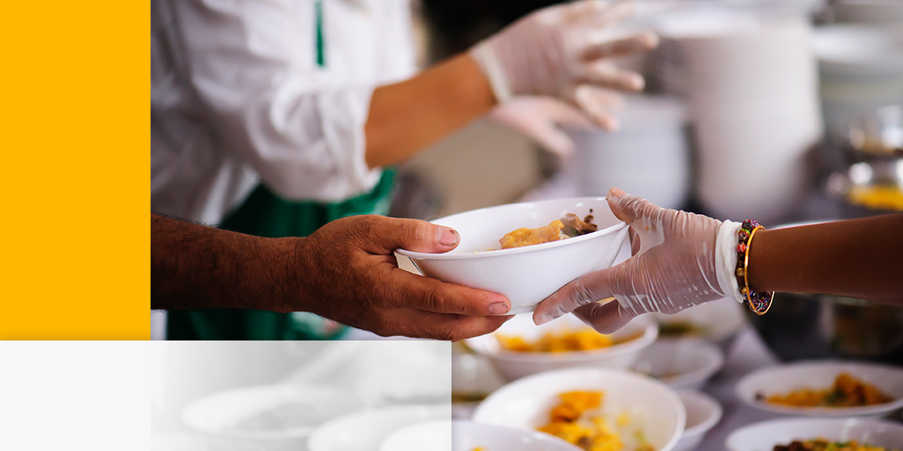
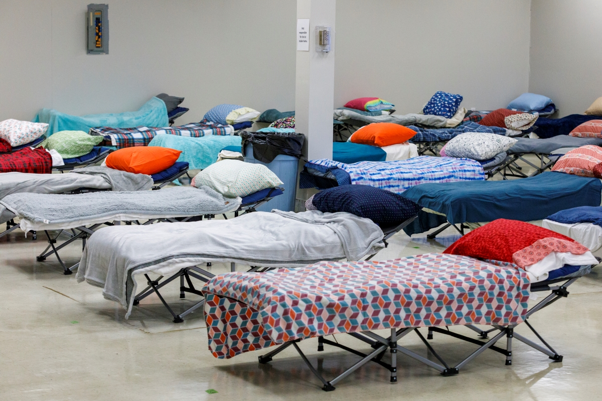
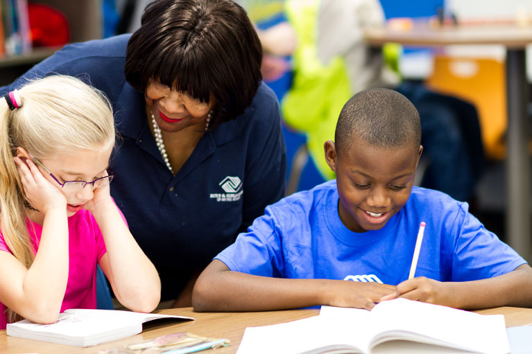

At Best Community Service, we believe that no one should have to go to bed hungry. Our Food Distribution and Meal Programs are dedicated to providing nutritious, free meals and groceries to individuals and families in need. Whether you're facing a temporary setback or struggling with long-term food insecurity, we are here to help. With weekly distributions and prepared meals, we aim to ensure that every person in our community has access to the food they need to stay healthy and thrive. Join us in making sure that hunger is one less challenge our neighbors have to face.
Finding stable housing can be one of life’s most difficult challenges, especially in times of crisis. Our Homeless Assistance and Shelter Services are designed to offer a safe, welcoming space for individuals and families experiencing homelessness. We provide not only emergency shelter, but also case management, job readiness training, and mental health support to help our clients transition into permanent housing. Our goal is to empower each person to regain their independence and restore their dignity, one step at a time. No one should have to navigate homelessness alone—let us walk with you on the path to stability.
At Best Community Service, we are passionate about investing in the future of our youth. Our Youth Mentoring and After-School Programs offer a positive and supportive environment where children and teens can grow academically, socially, and emotionally. From tutoring and homework help to mentorship and enrichment activities, our programs are designed to help young people unlock their full potential. Whether they need a safe space to learn or a trusted adult to guide them, we are here to provide the tools and support they need to succeed in school and in life.
Taking care of your mental health is just as important as taking care of your physical health. At Best Community Service, we offer compassionate and confidential Mental Health and Counseling Services to individuals facing challenges like anxiety, depression, trauma, or stress. Our licensed counselors are here to listen, support, and guide you through difficult times, whether you're dealing with a personal crisis or simply need someone to talk to. You don’t have to face mental health struggles alone—reach out today and take the first step toward healing, growth, and resilience.